Trajectory 12000
상태·접촉 시계열
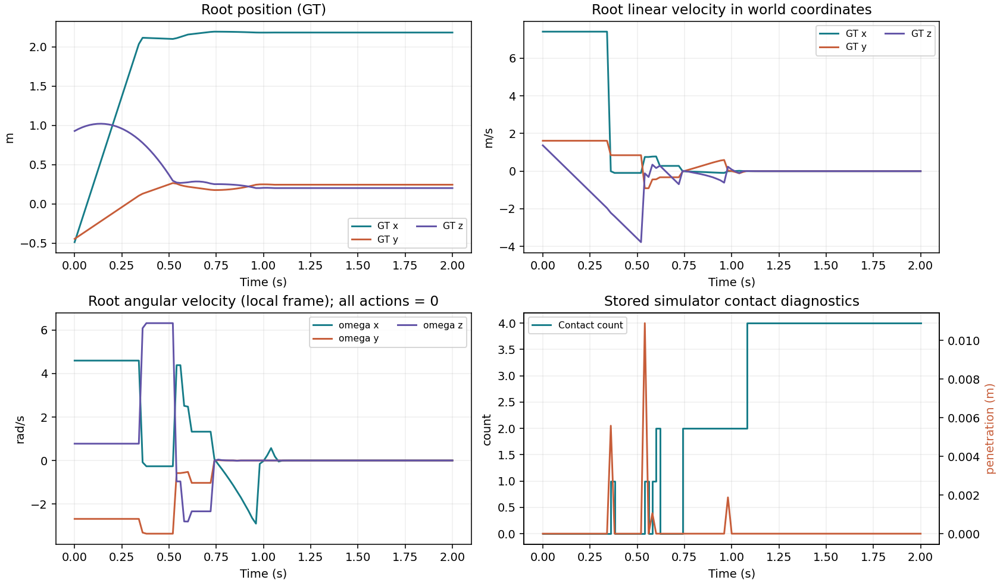
벽을 향한 투척 500개(50%) + 각 평면 10°인 V자 바닥 투척 500개(50%). 총 1,000개 OOD 중 각 조건 6개씩, 12개 GT 영상을 보여 줍니다.
두 조건 모두 랜덤 위치·회전으로 시작하며 모든 action은 0입니다. V자 바닥은 train과 같은 초기 선속도·각속도 분포를 사용하고, 벽 조건은 바닥에 닿기 전 벽을 맞도록 x방향 초기 속도를 정합니다.
V자 바닥: 중앙이 낮고 양쪽이 높은 z = |x| tan(10°), 각 평면의 수평 대비 경사 10°.
이번 페이지는 새 OOD v2의 정답(GT)입니다. state_mlp·DeepSets·hierarchical·contact_mlp의 5 epoch 체크포인트를 새 두 장면의 1,000개 전체에서 평가했습니다. 새 OOD v2 모델 오차·조건별 비교 보기 · 기존 W&B v1 기록
평가 의미 — 랜덤 위치·회전에서 평평한 벽을 향해 날아가 충돌한 뒤 바닥에 내려오는 반응을 확인합니다.
조건별 첫 6개 ID를 골라 같은 100스텝(2초)의 저장된 GT를 재생합니다. 이 조건의 상세 갤러리

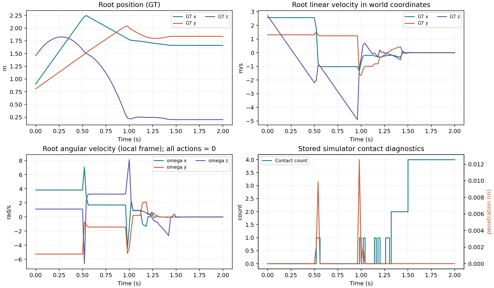
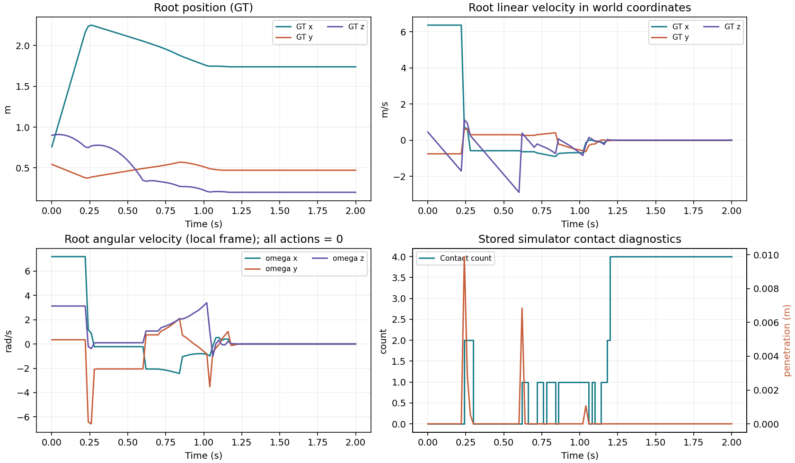
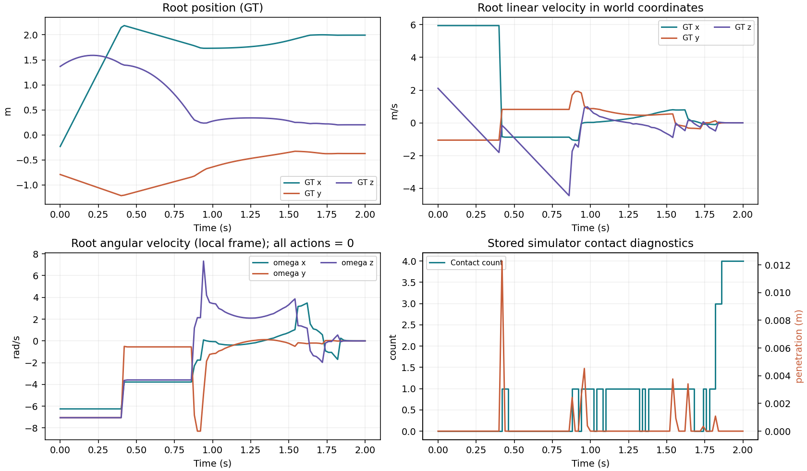
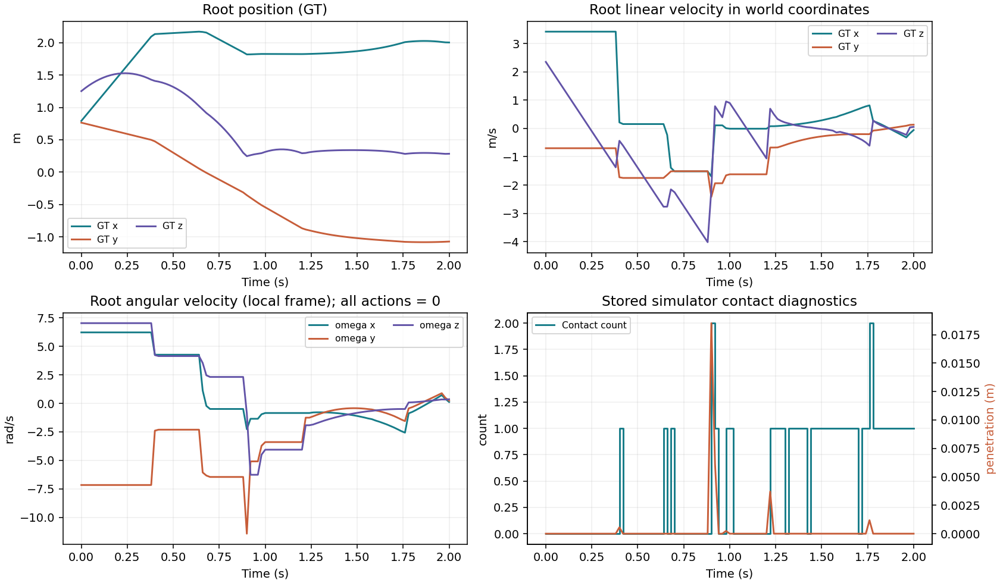
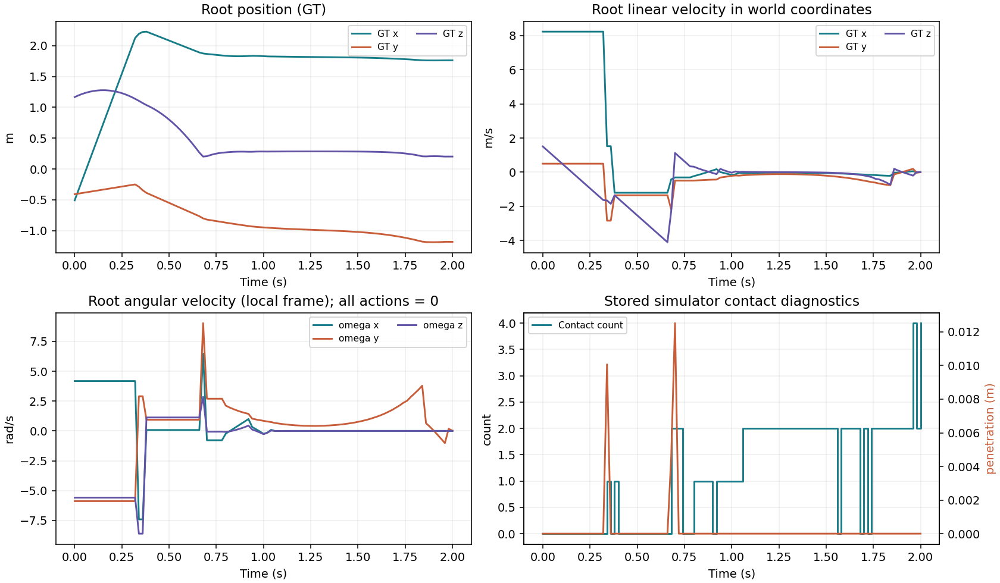
평가 의미 — 학습과 같은 초기 투척 분포에서 두 경사면이 만나는 낮은 중앙과 새로운 접촉 조합에 대한 반응을 확인합니다.
조건별 첫 6개 ID를 골라 같은 100스텝(2초)의 저장된 GT를 재생합니다. 이 조건의 상세 갤러리
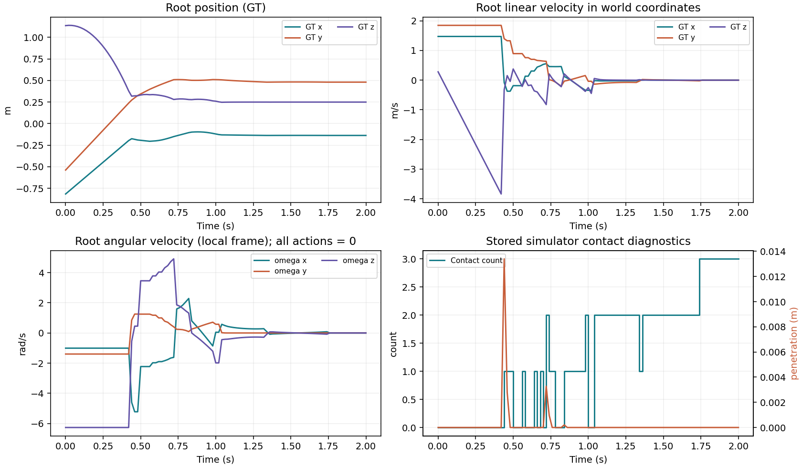
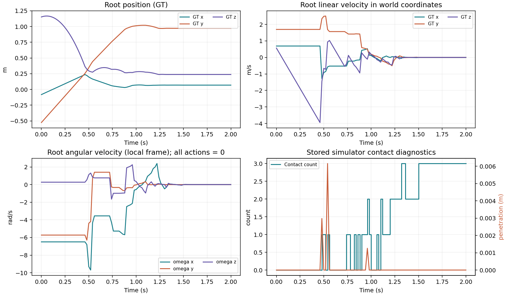
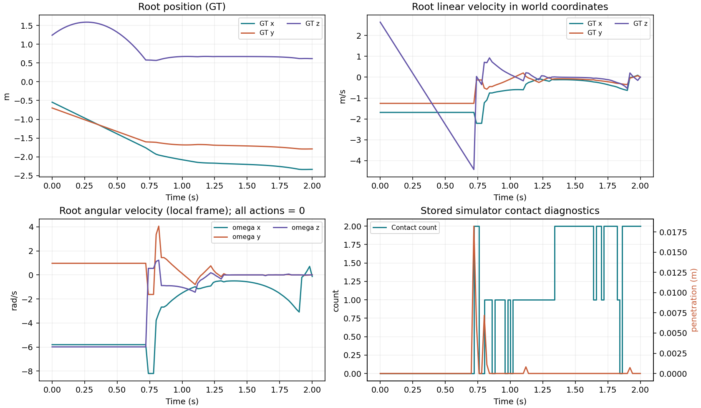
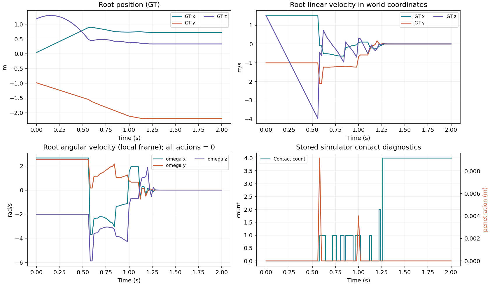
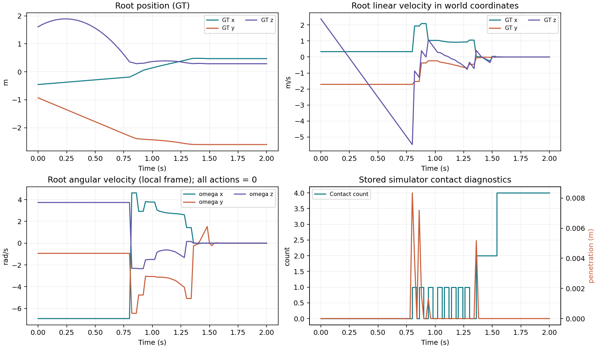
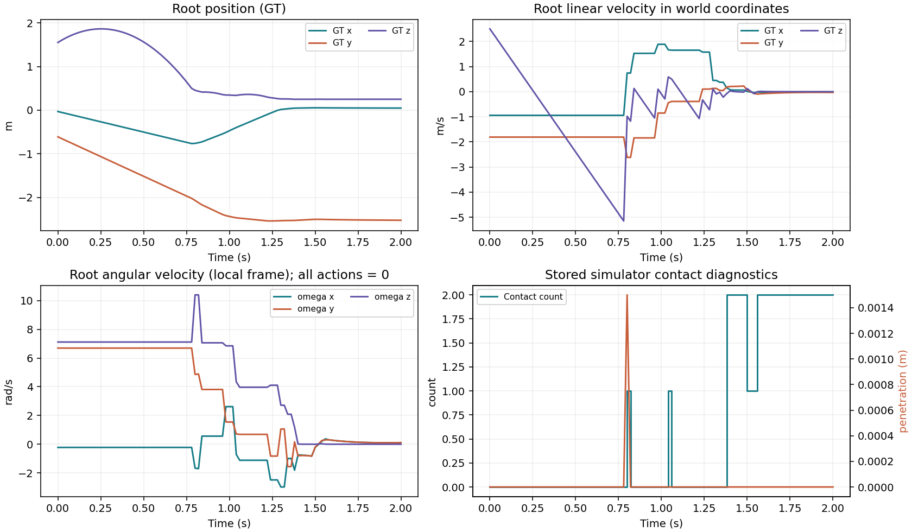